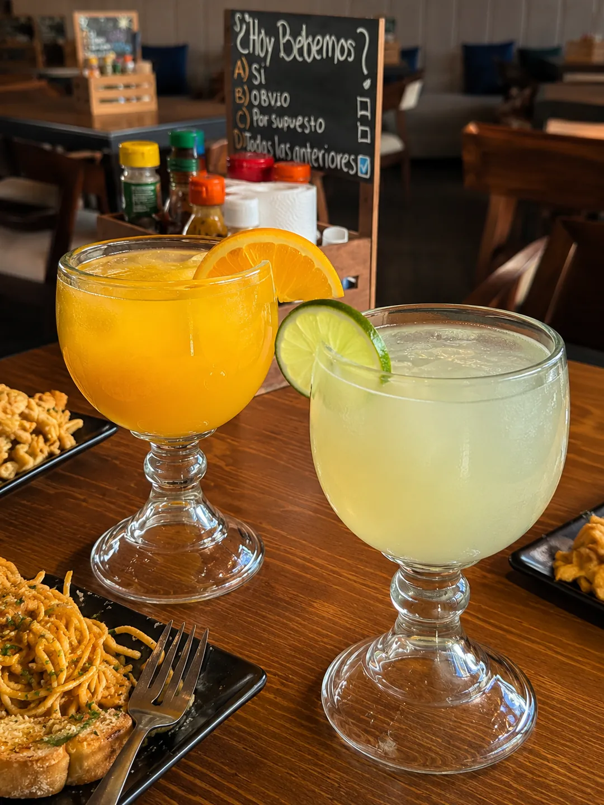
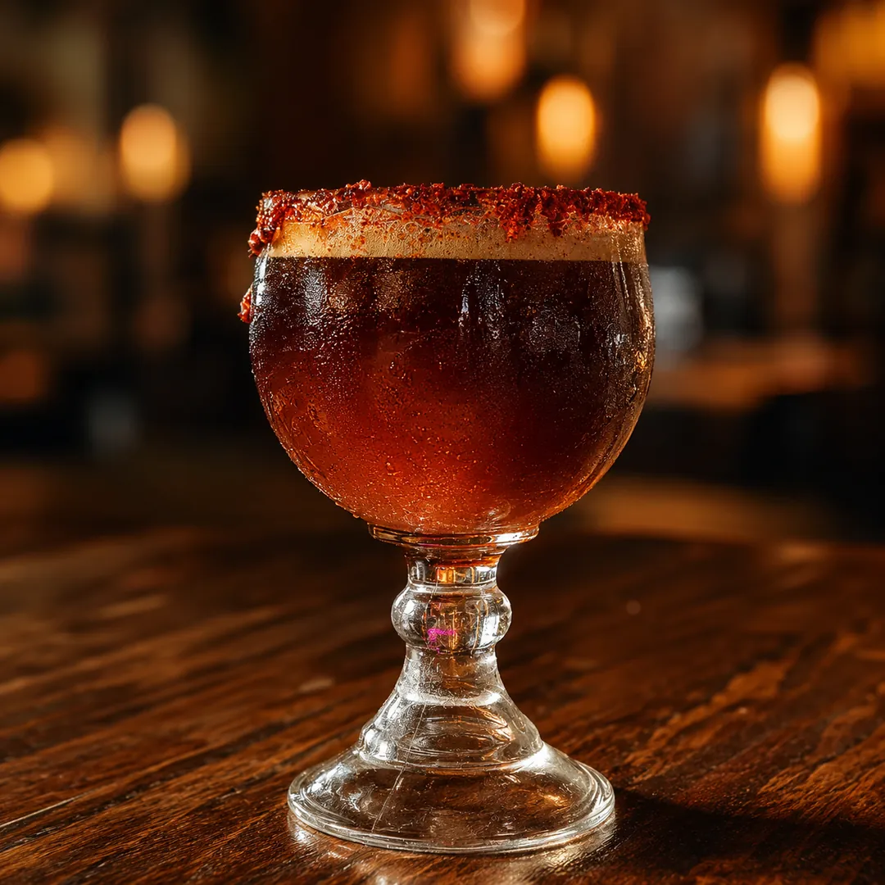

★ Estrella 01

Limonada y naranjada
Recién exprimidas, con hielo abundante y cítricos de temporada. Perfectas para compartir en la mesa.
$65Limonadas y naranjadas recién exprimidas, micheladas de la casa, refrescos, agua mineral, Boing y aguas de sabor del día. El acompañamiento perfecto para una mariscada en la terraza más fresca del sur de Querétaro.
Limonada y naranjada recién exprimidas y michelada de la casa. Las dos que mejor acompañan una buena mariscada del muelle.

Recién exprimidas, con hielo abundante y cítricos de temporada. Perfectas para compartir en la mesa.
$65
Tarro escarchado, cerveza bien fría y la salsa preparada del muelle. Acompañante clásico de las botanas marinas.
Consulta precioLas opciones de la jarra, el refrigerador y la barra fría. Pregunta también por los sabores del día.
Nuestras bebidas acompañan toda la carta de Mariscos Muelle 27, marisquería en Querétaro. Explora los platillos:
Una limonada o naranjada en jarra bien fría y la mesa lista para los mariscos. Te esperamos.
Te llevamos directo a nuestro WhatsApp. Solo dinos cuántos son y a qué hora vienen.